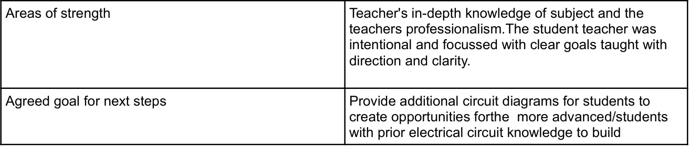
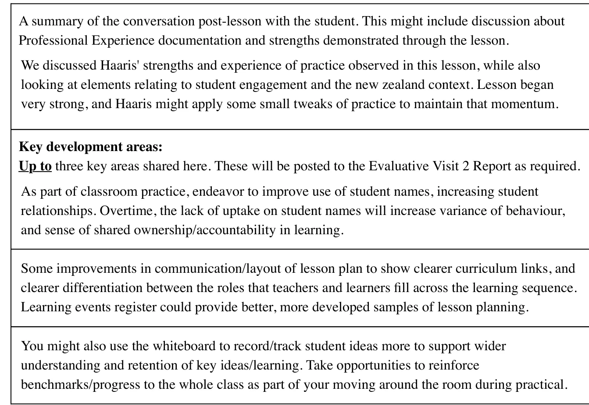
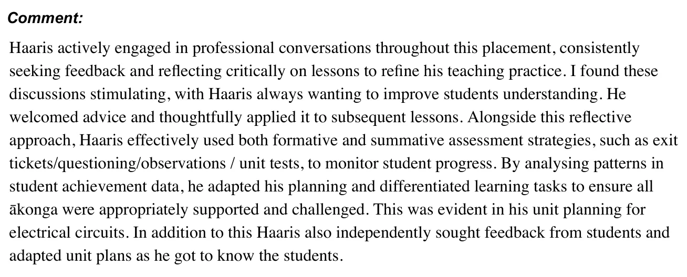

Focus
Commit to ongoing professional growth, using evidence, reflection and feedback to improve teaching practice and student outcomes.
Reflection
My planning has changed as I have learnt more about the students. In the introductory lessons, I realised that we needed to spend more time on charge before moving to circuits. Later, the differences in lesson timing helped me understand that following a plan does not necessarily mean that it meets the needs of the class. On 21 October, questions and the assessment left less time for practical work, while on 23 October, students finished the practical about ten minutes early.
My mentor teacher’s observation on 21 October acknowledged the clear goals, subject knowledge and support I provided to groups. He also suggested additional circuit challenges. In an informal discussion on 22 October, he recommended following some invitations for questions with a question that checks what students have understood. I reflected on these suggestions and prepared a fault-finding extension. This was a useful way of responding to feedback, although I would still need to see how students used it before evaluating its effect on learning.
In November, my mentor teacher encouraged me to use the lesson opening to get students curious before asking them to explain what they saw. I tried this at the electricity generation stations. Students offered explanations for changes in the meter reading, which gave us a starting point for discussing how power stations generate electricity. My mentor teacher’s feedback helped me see that a short introduction could make space for students’ thinking rather than doing the explaining for them.
I also changed how I approached the two-lamp challenge after no group in one class finished the earlier attempt. I drew and colour-coded the circuit on card so students could match the physical components to the diagram. When I revisited the task as a class competition, almost every group finished in 10 to 15 minutes. I changed the guide and the way I introduced the task at the same time, so I cannot tell which made the bigger difference.
Next steps: keep practical instructions and visual guides clear, and use a short individual check to see whether students can explain what they have built or observed.
Key Teaching Tasks
KTT 5: Professional conversations with my mentor teacher and visiting lecturer inform changes to my practice.
KTT 9: Reviewing learner work helps me identify misconceptions and decide what to revisit.
Evidence links
- Week 7 reflection (9–13 November 2026): Records how mentor feedback shaped my lesson opening and how I adapted the two-lamp challenge.
- Week 4 reflection (19–23 October 2026): Evaluates lesson timing, assessment limitations and my mentor teacher’s questioning feedback.

Excerpt from mentor teacher’s feedback (21 October 2026, page 2). - Revised Lesson 4 extension plan: Records the fault-finding extension prepared in response to feedback after 23 October.
- Electricity-generation lesson and evaluation, 11 November: Connects mentor discussion about curiosity with changes to my teaching.
- Combined student feedback: A further source of feedback for evaluating support, challenge and lesson pacing.

Excerpt from evaluative visitor’s report (post-lesson discussion and development areas, page 9). 
Excerpt from mentor teacher’s report (Standard 2, page 5).